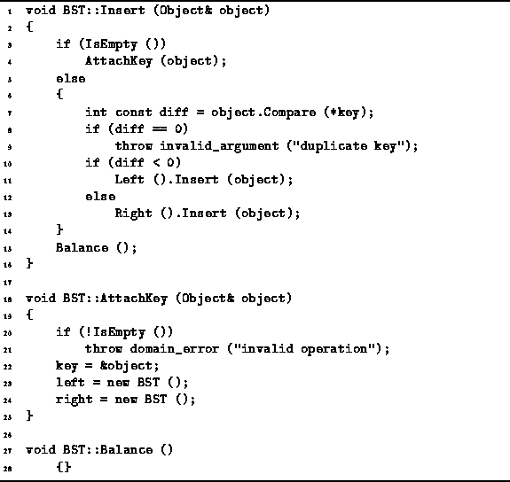
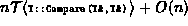
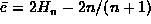

Data Structures and Algorithms
with Object-Oriented Design Patterns in C++
Data Structures and Algorithms
with Object-Oriented Design Patterns in C++
The Insert member function of the BST class
is defined in Program  .
This function takes as its lone argument a reference to
the object instance which is to be inserted into the binary search tree.
It is assumed in this implementation that duplicate keys are not permitted.
I.e., all of the keys contained in the tree are unique.
.
This function takes as its lone argument a reference to
the object instance which is to be inserted into the binary search tree.
It is assumed in this implementation that duplicate keys are not permitted.
I.e., all of the keys contained in the tree are unique.

Program: BST Class Insert, AttachKey and Balance Member Function Definitions
The Insert routine behaves like the Find routine until it arrives at an external, empty node. Once the empty node has been found, it is transformed into an internal node by calling the AttachKey function. AttachKey works as follows: A pointer to the object being inserted is saved in the key member variable and two new empty binary trees are attached to the node.
Notice that after the insertion is done,
the function Balance is called.
However, as shown in Program ,
the BST::Balance function does nothing.
Section describes the class AVLTree
which is derived from the BST class
and which inherits the Insert function but
overrides the Balance operation.
The asymptotic running time of the Insert member function is the same as that of Find for an unsuccessful search. I.e., in the worst case the running time is  and the average case running time is
where  is the average depth of an external
node in a binary search tree with n internal nodes.
When  , the worst case running time is O(n)
and the average case is
, the worst case running time is O(n)
and the average case is  .
.
 Copyright © 1997 by Bruno R. Preiss, P.Eng. All rights reserved.
Copyright © 1997 by Bruno R. Preiss, P.Eng. All rights reserved.